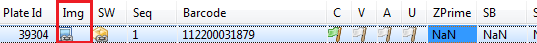
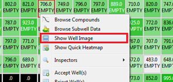
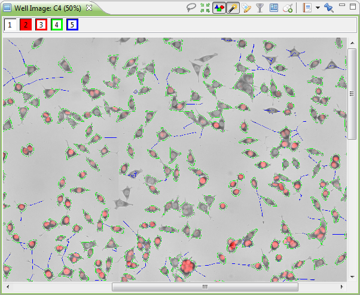

In Phaedra, the Well Image View displays the image that is associated with the currently selected well. If a well has no image associated with it, the image will be a blank rectangle with a dash in the middle.
You can see if an image is available in the plate browser. If an image is available, there will be an icon in the "Img" column.

To open a Well Image View:
Right-click on a well in a Heatmap and select "Show Well Image".

